from preamble import *
%matplotlib inlineChapter 5 - Model Evaluation and Improvement
Model Evaluation and Improvement
from sklearn.datasets import make_blobs
from sklearn.linear_model import LogisticRegression
from sklearn.model_selection import train_test_split
# create a synthetic dataset
X, y = make_blobs(random_state=0)
# split data and labels into a training and a test set
X_train, X_test, y_train, y_test = train_test_split(X, y, random_state=0)
# instantiate a model and fit it to the training set
logreg = LogisticRegression().fit(X_train, y_train)
# evaluate the model on the test set
print("Test set score: {:.2f}".format(logreg.score(X_test, y_test)))Test set score: 0.88Cross-Validation
mglearn.plots.plot_cross_validation()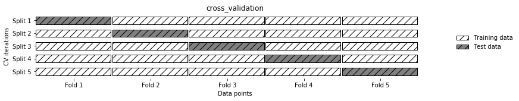
Cross-Validation in scikit-learn
from sklearn.model_selection import cross_val_score
from sklearn.datasets import load_iris
from sklearn.linear_model import LogisticRegression
iris = load_iris()
logreg = LogisticRegression(max_iter=1000)
scores = cross_val_score(logreg, iris.data, iris.target)
print("Cross-validation scores: {}".format(scores))Cross-validation scores: [0.967 1. 0.933 0.967 1. ]scores = cross_val_score(logreg, iris.data, iris.target, cv=5)
print("Cross-validation scores: {}".format(scores))Cross-validation scores: [0.967 1. 0.933 0.967 1. ]print("Average cross-validation score: {:.2f}".format(scores.mean()))Average cross-validation score: 0.97from sklearn.model_selection import cross_validate
res = cross_validate(logreg, iris.data, iris.target, cv=5,
return_train_score=True)
display(res){'fit_time': array([0.013, 0.017, 0.012, 0.013, 0.012]),
'score_time': array([0. , 0. , 0.001, 0. , 0.001]),
'test_score': array([0.967, 1. , 0.933, 0.967, 1. ]),
'train_score': array([0.967, 0.967, 0.983, 0.983, 0.975])}res_df = pd.DataFrame(res)
display(res_df)
print("Mean times and scores:\n", res_df.mean())| fit_time | score_time | test_score | train_score | |
|---|---|---|---|---|
| 0 | 0.01 | 0.00e+00 | 0.97 | 0.97 |
| 1 | 0.02 | 0.00e+00 | 1.00 | 0.97 |
| 2 | 0.01 | 9.94e-04 | 0.93 | 0.98 |
| 3 | 0.01 | 0.00e+00 | 0.97 | 0.98 |
| 4 | 0.01 | 9.98e-04 | 1.00 | 0.97 |
Mean times and scores:
fit_time 1.34e-02
score_time 3.98e-04
test_score 9.73e-01
train_score 9.75e-01
dtype: float64Benefits of Cross-Validation
Stratified K-Fold cross-validation and other strategies
from sklearn.datasets import load_iris
iris = load_iris()
print("Iris labels:\n{}".format(iris.target))Iris labels:
[0 0 0 0 0 0 0 0 0 0 0 0 0 0 0 0 0 0 0 0 0 0 0 0 0 0 0 0 0 0 0 0 0 0 0 0 0
0 0 0 0 0 0 0 0 0 0 0 0 0 1 1 1 1 1 1 1 1 1 1 1 1 1 1 1 1 1 1 1 1 1 1 1 1
1 1 1 1 1 1 1 1 1 1 1 1 1 1 1 1 1 1 1 1 1 1 1 1 1 1 2 2 2 2 2 2 2 2 2 2 2
2 2 2 2 2 2 2 2 2 2 2 2 2 2 2 2 2 2 2 2 2 2 2 2 2 2 2 2 2 2 2 2 2 2 2 2 2
2 2]mglearn.plots.plot_stratified_cross_validation()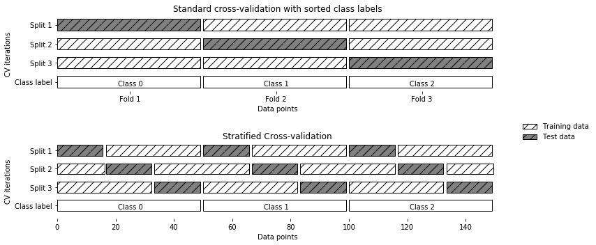
More control over cross-validation
from sklearn.model_selection import KFold
kfold = KFold(n_splits=5)print("Cross-validation scores:\n{}".format(
cross_val_score(logreg, iris.data, iris.target, cv=kfold)))Cross-validation scores:
[1. 1. 0.867 0.933 0.833]kfold = KFold(n_splits=3)
print("Cross-validation scores:\n{}".format(
cross_val_score(logreg, iris.data, iris.target, cv=kfold)))Cross-validation scores:
[0. 0. 0.]kfold = KFold(n_splits=3, shuffle=True, random_state=0)
print("Cross-validation scores:\n{}".format(
cross_val_score(logreg, iris.data, iris.target, cv=kfold)))Cross-validation scores:
[0.98 0.96 0.96]Leave-one-out cross-validation
from sklearn.model_selection import LeaveOneOut
loo = LeaveOneOut()
scores = cross_val_score(logreg, iris.data, iris.target, cv=loo)
print("Number of cv iterations: ", len(scores))
print("Mean accuracy: {:.2f}".format(scores.mean()))Number of cv iterations: 150
Mean accuracy: 0.97Shuffle-split cross-validation
mglearn.plots.plot_shuffle_split()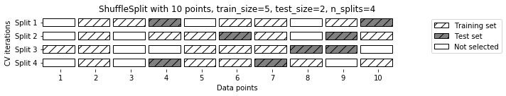
from sklearn.model_selection import ShuffleSplit
shuffle_split = ShuffleSplit(test_size=.5, train_size=.5, n_splits=10)
scores = cross_val_score(logreg, iris.data, iris.target, cv=shuffle_split)
print("Cross-validation scores:\n{}".format(scores))Cross-validation scores:
[0.947 0.987 0.973 0.96 0.933 0.96 0.987 0.947 0.947 0.933]Cross-validation with groups
mglearn.plots.plot_group_kfold()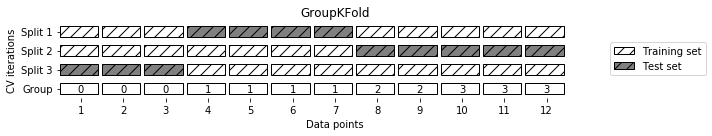
from sklearn.model_selection import GroupKFold
# create synthetic dataset
X, y = make_blobs(n_samples=12, random_state=0)
# assume the first three samples belong to the same group,
# then the next four, etc.
groups = [0, 0, 0, 1, 1, 1, 1, 2, 2, 3, 3, 3]
scores = cross_val_score(logreg, X, y, groups=groups, cv=GroupKFold(n_splits=3))
print("Cross-validation scores:\n{}".format(scores))Cross-validation scores:
[0.75 0.6 0.667]Grid Search
Simple Grid Search
# naive grid search implementation
from sklearn.svm import SVC
X_train, X_test, y_train, y_test = train_test_split(
iris.data, iris.target, random_state=0)
print("Size of training set: {} size of test set: {}".format(
X_train.shape[0], X_test.shape[0]))
best_score = 0
for gamma in [0.001, 0.01, 0.1, 1, 10, 100]:
for C in [0.001, 0.01, 0.1, 1, 10, 100]:
# for each combination of parameters, train an SVC
svm = SVC(gamma=gamma, C=C)
svm.fit(X_train, y_train)
# evaluate the SVC on the test set
score = svm.score(X_test, y_test)
# if we got a better score, store the score and parameters
if score > best_score:
best_score = score
best_parameters = {'C': C, 'gamma': gamma}
print("Best score: {:.2f}".format(best_score))
print("Best parameters: {}".format(best_parameters))Size of training set: 112 size of test set: 38
Best score: 0.97
Best parameters: {'C': 100, 'gamma': 0.001}The danger of overfitting the parameters and the validation set
mglearn.plots.plot_threefold_split()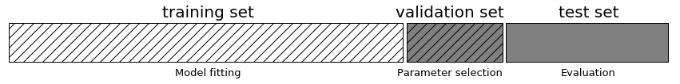
from sklearn.svm import SVC
# split data into train+validation set and test set
X_trainval, X_test, y_trainval, y_test = train_test_split(
iris.data, iris.target, random_state=0)
# split train+validation set into training and validation sets
X_train, X_valid, y_train, y_valid = train_test_split(
X_trainval, y_trainval, random_state=1)
print("Size of training set: {} size of validation set: {} size of test set:"
" {}\n".format(X_train.shape[0], X_valid.shape[0], X_test.shape[0]))
best_score = 0
for gamma in [0.001, 0.01, 0.1, 1, 10, 100]:
for C in [0.001, 0.01, 0.1, 1, 10, 100]:
# for each combination of parameters, train an SVC
svm = SVC(gamma=gamma, C=C)
svm.fit(X_train, y_train)
# evaluate the SVC on the validation set
score = svm.score(X_valid, y_valid)
# if we got a better score, store the score and parameters
if score > best_score:
best_score = score
best_parameters = {'C': C, 'gamma': gamma}
# rebuild a model on the combined training and validation set,
# and evaluate it on the test set
svm = SVC(**best_parameters)
svm.fit(X_trainval, y_trainval)
test_score = svm.score(X_test, y_test)
print("Best score on validation set: {:.2f}".format(best_score))
print("Best parameters: ", best_parameters)
print("Test set score with best parameters: {:.2f}".format(test_score))Size of training set: 84 size of validation set: 28 size of test set: 38
Best score on validation set: 0.96
Best parameters: {'C': 10, 'gamma': 0.001}
Test set score with best parameters: 0.92Grid Search with Cross-Validation
for gamma in [0.001, 0.01, 0.1, 1, 10, 100]:
for C in [0.001, 0.01, 0.1, 1, 10, 100]:
# for each combination of parameters,
# train an SVC
svm = SVC(gamma=gamma, C=C)
# perform cross-validation
scores = cross_val_score(svm, X_trainval, y_trainval, cv=5)
# compute mean cross-validation accuracy
score = np.mean(scores)
# if we got a better score, store the score and parameters
if score > best_score:
best_score = score
best_parameters = {'C': C, 'gamma': gamma}
# rebuild a model on the combined training and validation set
svm = SVC(**best_parameters)
svm.fit(X_trainval, y_trainval)SVC(C=10, gamma=0.1)mglearn.plots.plot_cross_val_selection()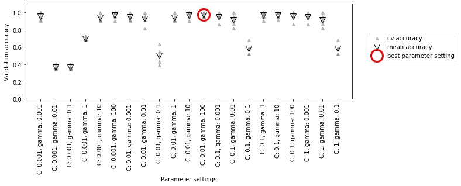
mglearn.plots.plot_grid_search_overview()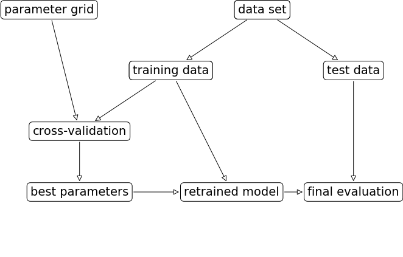
param_grid = {'C': [0.001, 0.01, 0.1, 1, 10, 100],
'gamma': [0.001, 0.01, 0.1, 1, 10, 100]}
print("Parameter grid:\n{}".format(param_grid))Parameter grid:
{'C': [0.001, 0.01, 0.1, 1, 10, 100], 'gamma': [0.001, 0.01, 0.1, 1, 10, 100]}from sklearn.model_selection import GridSearchCV
from sklearn.svm import SVC
grid_search = GridSearchCV(SVC(), param_grid, cv=5,
return_train_score=True)X_train, X_test, y_train, y_test = train_test_split(
iris.data, iris.target, random_state=0)grid_search.fit(X_train, y_train)GridSearchCV(cv=5, estimator=SVC(),
param_grid={'C': [0.001, 0.01, 0.1, 1, 10, 100],
'gamma': [0.001, 0.01, 0.1, 1, 10, 100]},
return_train_score=True)print("Test set score: {:.2f}".format(grid_search.score(X_test, y_test)))Test set score: 0.97print("Best parameters: {}".format(grid_search.best_params_))
print("Best cross-validation score: {:.2f}".format(grid_search.best_score_))Best parameters: {'C': 10, 'gamma': 0.1}
Best cross-validation score: 0.97print("Best estimator:\n{}".format(grid_search.best_estimator_))Best estimator:
SVC(C=10, gamma=0.1)Analyzing the result of cross-validation
import pandas as pd
# convert to Dataframe
results = pd.DataFrame(grid_search.cv_results_)
# show the first 5 rows
display(results.head())| mean_fit_time | std_fit_time | mean_score_time | std_score_time | ... | split3_train_score | split4_train_score | mean_train_score | std_train_score | |
|---|---|---|---|---|---|---|---|---|---|
| 0 | 5.99e-04 | 4.89e-04 | 1.99e-04 | 3.99e-04 | ... | 0.37 | 0.36 | 0.37 | 5.58e-03 |
| 1 | 5.98e-04 | 4.89e-04 | 0.00e+00 | 0.00e+00 | ... | 0.37 | 0.36 | 0.37 | 5.58e-03 |
| 2 | 3.99e-04 | 4.89e-04 | 3.99e-04 | 4.89e-04 | ... | 0.37 | 0.36 | 0.37 | 5.58e-03 |
| 3 | 7.98e-04 | 3.99e-04 | 0.00e+00 | 0.00e+00 | ... | 0.37 | 0.36 | 0.37 | 5.58e-03 |
| 4 | 3.99e-04 | 4.89e-04 | 2.00e-04 | 3.99e-04 | ... | 0.37 | 0.36 | 0.37 | 5.58e-03 |
5 rows × 22 columns
scores = np.array(results.mean_test_score).reshape(6, 6)
# plot the mean cross-validation scores
mglearn.tools.heatmap(scores, xlabel='gamma', xticklabels=param_grid['gamma'],
ylabel='C', yticklabels=param_grid['C'], cmap="viridis")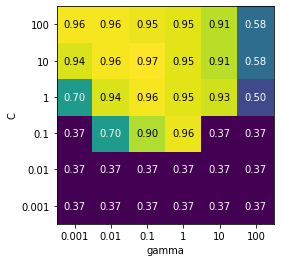
fig, axes = plt.subplots(1, 3, figsize=(13, 5))
param_grid_linear = {'C': np.linspace(1, 2, 6),
'gamma': np.linspace(1, 2, 6)}
param_grid_one_log = {'C': np.linspace(1, 2, 6),
'gamma': np.logspace(-3, 2, 6)}
param_grid_range = {'C': np.logspace(-3, 2, 6),
'gamma': np.logspace(-7, -2, 6)}
for param_grid, ax in zip([param_grid_linear, param_grid_one_log,
param_grid_range], axes):
grid_search = GridSearchCV(SVC(), param_grid, cv=5)
grid_search.fit(X_train, y_train)
scores = grid_search.cv_results_['mean_test_score'].reshape(6, 6)
# plot the mean cross-validation scores
scores_image = mglearn.tools.heatmap(
scores, xlabel='gamma', ylabel='C', xticklabels=param_grid['gamma'],
yticklabels=param_grid['C'], cmap="viridis", ax=ax)
plt.colorbar(scores_image, ax=axes.tolist())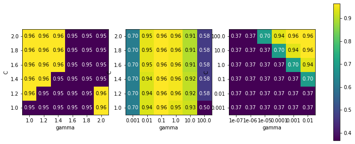
param_grid = [{'kernel': ['rbf'],
'C': [0.001, 0.01, 0.1, 1, 10, 100],
'gamma': [0.001, 0.01, 0.1, 1, 10, 100]},
{'kernel': ['linear'],
'C': [0.001, 0.01, 0.1, 1, 10, 100]}]
print("List of grids:\n{}".format(param_grid))List of grids:
[{'kernel': ['rbf'], 'C': [0.001, 0.01, 0.1, 1, 10, 100], 'gamma': [0.001, 0.01, 0.1, 1, 10, 100]}, {'kernel': ['linear'], 'C': [0.001, 0.01, 0.1, 1, 10, 100]}]grid_search = GridSearchCV(SVC(), param_grid, cv=5,
return_train_score=True)
grid_search.fit(X_train, y_train)
print("Best parameters: {}".format(grid_search.best_params_))
print("Best cross-validation score: {:.2f}".format(grid_search.best_score_))Best parameters: {'C': 10, 'gamma': 0.1, 'kernel': 'rbf'}
Best cross-validation score: 0.97results = pd.DataFrame(grid_search.cv_results_)
# we display the transposed table so that it better fits on the page:
display(results.T)| 0 | 1 | 2 | 3 | ... | 38 | 39 | 40 | 41 | |
|---|---|---|---|---|---|---|---|---|---|
| mean_fit_time | 0.0008 | 0.0006 | 0.0008 | 0.0008 | ... | 0 | 0 | 0.0002 | 0.001 |
| std_fit_time | 0.0004 | 0.00049 | 0.0004 | 0.0004 | ... | 0 | 0 | 0.00041 | 1.6e-05 |
| mean_score_time | 0.0002 | 0.0004 | 0.0002 | 0.0002 | ... | 0.0008 | 0 | 0 | 0 |
| std_score_time | 0.0004 | 0.00049 | 0.0004 | 0.0004 | ... | 0.0004 | 0 | 0 | 0 |
| param_C | 0.001 | 0.001 | 0.001 | 0.001 | ... | 0.1 | 1 | 10 | 100 |
| param_gamma | 0.001 | 0.01 | 0.1 | 1 | ... | NaN | NaN | NaN | NaN |
| param_kernel | rbf | rbf | rbf | rbf | ... | linear | linear | linear | linear |
| params | {'C': 0.001, 'gamma': 0.001, 'kernel': 'rbf'} | {'C': 0.001, 'gamma': 0.01, 'kernel': 'rbf'} | {'C': 0.001, 'gamma': 0.1, 'kernel': 'rbf'} | {'C': 0.001, 'gamma': 1, 'kernel': 'rbf'} | ... | {'C': 0.1, 'kernel': 'linear'} | {'C': 1, 'kernel': 'linear'} | {'C': 10, 'kernel': 'linear'} | {'C': 100, 'kernel': 'linear'} |
| split0_test_score | 0.35 | 0.35 | 0.35 | 0.35 | ... | 1 | 1 | 1 | 0.96 |
| split1_test_score | 0.35 | 0.35 | 0.35 | 0.35 | ... | 0.91 | 0.96 | 1 | 0.96 |
| split2_test_score | 0.36 | 0.36 | 0.36 | 0.36 | ... | 1 | 1 | 1 | 1 |
| split3_test_score | 0.36 | 0.36 | 0.36 | 0.36 | ... | 0.91 | 0.95 | 0.91 | 0.91 |
| split4_test_score | 0.41 | 0.41 | 0.41 | 0.41 | ... | 0.95 | 0.95 | 0.95 | 0.95 |
| mean_test_score | 0.37 | 0.37 | 0.37 | 0.37 | ... | 0.96 | 0.97 | 0.97 | 0.96 |
| std_test_score | 0.022 | 0.022 | 0.022 | 0.022 | ... | 0.04 | 0.022 | 0.036 | 0.029 |
| rank_test_score | 27 | 27 | 27 | 27 | ... | 8 | 1 | 3 | 8 |
| split0_train_score | 0.37 | 0.37 | 0.37 | 0.37 | ... | 0.97 | 0.99 | 0.99 | 0.98 |
| split1_train_score | 0.37 | 0.37 | 0.37 | 0.37 | ... | 0.97 | 0.98 | 0.99 | 0.99 |
| split2_train_score | 0.37 | 0.37 | 0.37 | 0.37 | ... | 0.94 | 0.98 | 0.98 | 0.99 |
| split3_train_score | 0.37 | 0.37 | 0.37 | 0.37 | ... | 0.97 | 0.99 | 0.99 | 1 |
| split4_train_score | 0.36 | 0.36 | 0.36 | 0.36 | ... | 0.97 | 0.99 | 1 | 1 |
| mean_train_score | 0.37 | 0.37 | 0.37 | 0.37 | ... | 0.96 | 0.98 | 0.99 | 0.99 |
| std_train_score | 0.0056 | 0.0056 | 0.0056 | 0.0056 | ... | 0.0088 | 0.0055 | 0.007 | 0.0084 |
23 rows × 42 columns
Using different cross-validation strategies with grid search
Nested cross-validation
param_grid = {'C': [0.001, 0.01, 0.1, 1, 10, 100],
'gamma': [0.001, 0.01, 0.1, 1, 10, 100]}
scores = cross_val_score(GridSearchCV(SVC(), param_grid, cv=5),
iris.data, iris.target, cv=5)
print("Cross-validation scores: ", scores)
print("Mean cross-validation score: ", scores.mean())Cross-validation scores: [0.967 1. 0.967 0.967 1. ]
Mean cross-validation score: 0.9800000000000001def nested_cv(X, y, inner_cv, outer_cv, Classifier, parameter_grid):
outer_scores = []
# for each split of the data in the outer cross-validation
# (split method returns indices of training and test parts)
for training_samples, test_samples in outer_cv.split(X, y):
# find best parameter using inner cross-validation
best_parms = {}
best_score = -np.inf
# iterate over parameters
for parameters in parameter_grid:
# accumulate score over inner splits
cv_scores = []
# iterate over inner cross-validation
for inner_train, inner_test in inner_cv.split(
X[training_samples], y[training_samples]):
# build classifier given parameters and training data
clf = Classifier(**parameters)
clf.fit(X[inner_train], y[inner_train])
# evaluate on inner test set
score = clf.score(X[inner_test], y[inner_test])
cv_scores.append(score)
# compute mean score over inner folds
mean_score = np.mean(cv_scores)
if mean_score > best_score:
# if better than so far, remember parameters
best_score = mean_score
best_params = parameters
# build classifier on best parameters using outer training set
clf = Classifier(**best_params)
clf.fit(X[training_samples], y[training_samples])
# evaluate
outer_scores.append(clf.score(X[test_samples], y[test_samples]))
return np.array(outer_scores)from sklearn.model_selection import ParameterGrid, StratifiedKFold
scores = nested_cv(iris.data, iris.target, StratifiedKFold(5),
StratifiedKFold(5), SVC, ParameterGrid(param_grid))
print("Cross-validation scores: {}".format(scores))Cross-validation scores: [0.967 1. 0.967 0.967 1. ]Parallelizing cross-validation and grid search
Evaluation Metrics and Scoring
Keep the End Goal in Mind
Metrics for Binary Classification
Kinds of errors
Imbalanced datasets
from sklearn.datasets import load_digits
digits = load_digits()
y = digits.target == 9
X_train, X_test, y_train, y_test = train_test_split(
digits.data, y, random_state=0)from sklearn.dummy import DummyClassifier
dummy_majority = DummyClassifier(strategy='most_frequent').fit(X_train, y_train)
pred_most_frequent = dummy_majority.predict(X_test)
print("Unique predicted labels: {}".format(np.unique(pred_most_frequent)))
print("Test score: {:.2f}".format(dummy_majority.score(X_test, y_test)))Unique predicted labels: [False]
Test score: 0.90from sklearn.tree import DecisionTreeClassifier
tree = DecisionTreeClassifier(max_depth=2).fit(X_train, y_train)
pred_tree = tree.predict(X_test)
print("Test score: {:.2f}".format(tree.score(X_test, y_test)))Test score: 0.92from sklearn.linear_model import LogisticRegression
dummy = DummyClassifier().fit(X_train, y_train)
pred_dummy = dummy.predict(X_test)
print("dummy score: {:.2f}".format(dummy.score(X_test, y_test)))
logreg = LogisticRegression(max_iter=1000, C=0.1).fit(X_train, y_train)
pred_logreg = logreg.predict(X_test)
print("logreg score: {:.2f}".format(logreg.score(X_test, y_test)))dummy score: 0.84
logreg score: 0.98Confusion matrices
from sklearn.metrics import confusion_matrix
confusion = confusion_matrix(y_test, pred_logreg)
print("Confusion matrix:\n{}".format(confusion))Confusion matrix:
[[402 1]
[ 6 41]]mglearn.plots.plot_confusion_matrix_illustration()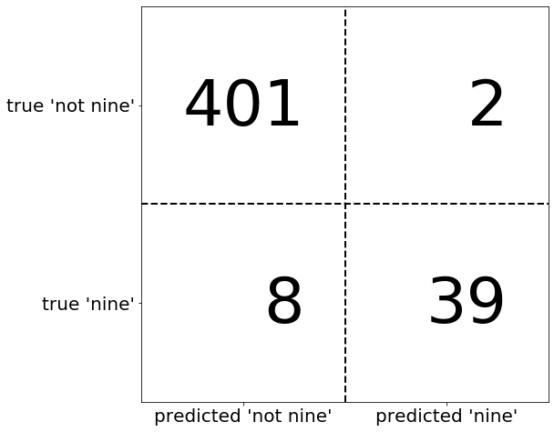
mglearn.plots.plot_binary_confusion_matrix()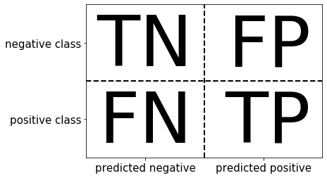
print("Most frequent class:")
print(confusion_matrix(y_test, pred_most_frequent))
print("\nDummy model:")
print(confusion_matrix(y_test, pred_dummy))
print("\nDecision tree:")
print(confusion_matrix(y_test, pred_tree))
print("\nLogistic Regression")
print(confusion_matrix(y_test, pred_logreg))Most frequent class:
[[403 0]
[ 47 0]]
Dummy model:
[[362 41]
[ 45 2]]
Decision tree:
[[390 13]
[ 24 23]]
Logistic Regression
[[402 1]
[ 6 41]]Relation to accuracy
\[\begin{equation} \text{Accuracy} = \frac{\text{TP} + \text{TN}}{\text{TP} + \text{TN} + \text{FP} + \text{FN}} \end{equation}\]
Precision, recall and f-score
\[\begin{equation} \text{Precision} = \frac{\text{TP}}{\text{TP} + \text{FP}} \end{equation}\]
\[\begin{equation} \text{Recall} = \frac{\text{TP}}{\text{TP} + \text{FN}} \end{equation}\] \[\begin{equation} \text{F} = 2 \cdot \frac{\text{precision} \cdot \text{recall}}{\text{precision} + \text{recall}} \end{equation}\]
from sklearn.metrics import f1_score
print("f1 score most frequent: {:.2f}".format(
f1_score(y_test, pred_most_frequent)))
print("f1 score dummy: {:.2f}".format(f1_score(y_test, pred_dummy)))
print("f1 score tree: {:.2f}".format(f1_score(y_test, pred_tree)))
print("f1 score logistic regression: {:.2f}".format(
f1_score(y_test, pred_logreg)))f1 score most frequent: 0.00
f1 score dummy: 0.04
f1 score tree: 0.55
f1 score logistic regression: 0.92from sklearn.metrics import classification_report
print(classification_report(y_test, pred_most_frequent,
target_names=["not nine", "nine"])) precision recall f1-score support
not nine 0.90 1.00 0.94 403
nine 0.00 0.00 0.00 47
accuracy 0.90 450
macro avg 0.45 0.50 0.47 450
weighted avg 0.80 0.90 0.85 450
print(classification_report(y_test, pred_dummy,
target_names=["not nine", "nine"])) precision recall f1-score support
not nine 0.89 0.90 0.89 403
nine 0.05 0.04 0.04 47
accuracy 0.81 450
macro avg 0.47 0.47 0.47 450
weighted avg 0.80 0.81 0.81 450
print(classification_report(y_test, pred_logreg,
target_names=["not nine", "nine"])) precision recall f1-score support
not nine 0.99 1.00 0.99 403
nine 0.98 0.87 0.92 47
accuracy 0.98 450
macro avg 0.98 0.93 0.96 450
weighted avg 0.98 0.98 0.98 450
Taking uncertainty into account
X, y = make_blobs(n_samples=(400, 50), cluster_std=[7.0, 2],
random_state=22)
X_train, X_test, y_train, y_test = train_test_split(X, y, random_state=0)
svc = SVC(gamma=.05).fit(X_train, y_train)mglearn.plots.plot_decision_threshold()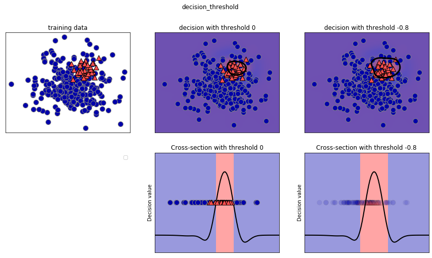
print(classification_report(y_test, svc.predict(X_test))) precision recall f1-score support
0 0.97 0.89 0.93 104
1 0.35 0.67 0.46 9
accuracy 0.88 113
macro avg 0.66 0.78 0.70 113
weighted avg 0.92 0.88 0.89 113
y_pred_lower_threshold = svc.decision_function(X_test) > -.8print(classification_report(y_test, y_pred_lower_threshold)) precision recall f1-score support
0 1.00 0.82 0.90 104
1 0.32 1.00 0.49 9
accuracy 0.83 113
macro avg 0.66 0.91 0.69 113
weighted avg 0.95 0.83 0.87 113
Precision-Recall curves and ROC curves
from sklearn.metrics import precision_recall_curve
precision, recall, thresholds = precision_recall_curve(
y_test, svc.decision_function(X_test))# Use more data points for a smoother curve
X, y = make_blobs(n_samples=(4000, 500), cluster_std=[7.0, 2], random_state=22)
X_train, X_test, y_train, y_test = train_test_split(X, y, random_state=0)
svc = SVC(gamma=.05).fit(X_train, y_train)
precision, recall, thresholds = precision_recall_curve(
y_test, svc.decision_function(X_test))
# find threshold closest to zero
close_zero = np.argmin(np.abs(thresholds))
plt.plot(precision[close_zero], recall[close_zero], 'o', markersize=10,
label="threshold zero", fillstyle="none", c='k', mew=2)
plt.plot(precision, recall, label="precision recall curve")
plt.xlabel("Precision")
plt.ylabel("Recall")
plt.legend(loc="best")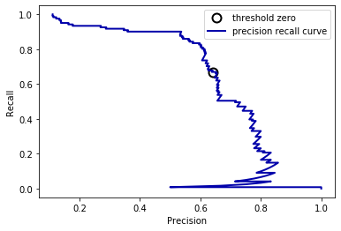
from sklearn.ensemble import RandomForestClassifier
rf = RandomForestClassifier(n_estimators=100, random_state=0, max_features=2)
rf.fit(X_train, y_train)
# RandomForestClassifier has predict_proba, but not decision_function
precision_rf, recall_rf, thresholds_rf = precision_recall_curve(
y_test, rf.predict_proba(X_test)[:, 1])
plt.plot(precision, recall, label="svc")
plt.plot(precision[close_zero], recall[close_zero], 'o', markersize=10,
label="threshold zero svc", fillstyle="none", c='k', mew=2)
plt.plot(precision_rf, recall_rf, label="rf")
close_default_rf = np.argmin(np.abs(thresholds_rf - 0.5))
plt.plot(precision_rf[close_default_rf], recall_rf[close_default_rf], '^', c='k',
markersize=10, label="threshold 0.5 rf", fillstyle="none", mew=2)
plt.xlabel("Precision")
plt.ylabel("Recall")
plt.legend(loc="best")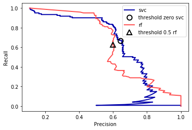
print("f1_score of random forest: {:.3f}".format(
f1_score(y_test, rf.predict(X_test))))
print("f1_score of svc: {:.3f}".format(f1_score(y_test, svc.predict(X_test))))f1_score of random forest: 0.610
f1_score of svc: 0.656from sklearn.metrics import average_precision_score
ap_rf = average_precision_score(y_test, rf.predict_proba(X_test)[:, 1])
ap_svc = average_precision_score(y_test, svc.decision_function(X_test))
print("Average precision of random forest: {:.3f}".format(ap_rf))
print("Average precision of svc: {:.3f}".format(ap_svc))Average precision of random forest: 0.660
Average precision of svc: 0.666Receiver Operating Characteristics (ROC) and AUC
\[\begin{equation} \text{FPR} = \frac{\text{FP}}{\text{FP} + \text{TN}} \end{equation}\]
from sklearn.metrics import roc_curve
fpr, tpr, thresholds = roc_curve(y_test, svc.decision_function(X_test))
plt.plot(fpr, tpr, label="ROC Curve")
plt.xlabel("FPR")
plt.ylabel("TPR (recall)")
# find threshold closest to zero
close_zero = np.argmin(np.abs(thresholds))
plt.plot(fpr[close_zero], tpr[close_zero], 'o', markersize=10,
label="threshold zero", fillstyle="none", c='k', mew=2)
plt.legend(loc=4)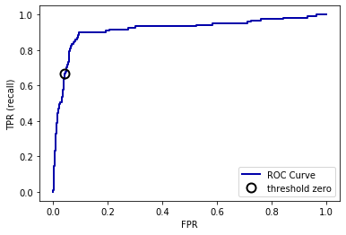
fpr_rf, tpr_rf, thresholds_rf = roc_curve(y_test, rf.predict_proba(X_test)[:, 1])
plt.plot(fpr, tpr, label="ROC Curve SVC")
plt.plot(fpr_rf, tpr_rf, label="ROC Curve RF")
plt.xlabel("FPR")
plt.ylabel("TPR (recall)")
plt.plot(fpr[close_zero], tpr[close_zero], 'o', markersize=10,
label="threshold zero SVC", fillstyle="none", c='k', mew=2)
close_default_rf = np.argmin(np.abs(thresholds_rf - 0.5))
plt.plot(fpr_rf[close_default_rf], tpr[close_default_rf], '^', markersize=10,
label="threshold 0.5 RF", fillstyle="none", c='k', mew=2)
plt.legend(loc=4)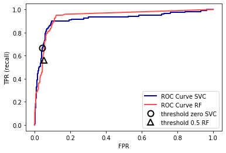
from sklearn.metrics import roc_auc_score
rf_auc = roc_auc_score(y_test, rf.predict_proba(X_test)[:, 1])
svc_auc = roc_auc_score(y_test, svc.decision_function(X_test))
print("AUC for Random Forest: {:.3f}".format(rf_auc))
print("AUC for SVC: {:.3f}".format(svc_auc))AUC for Random Forest: 0.937
AUC for SVC: 0.916y = digits.target == 9
X_train, X_test, y_train, y_test = train_test_split(
digits.data, y, random_state=0)
plt.figure()
for gamma in [1, 0.05, 0.01]:
svc = SVC(gamma=gamma).fit(X_train, y_train)
accuracy = svc.score(X_test, y_test)
auc = roc_auc_score(y_test, svc.decision_function(X_test))
fpr, tpr, _ = roc_curve(y_test , svc.decision_function(X_test))
print("gamma = {:.2f} accuracy = {:.2f} AUC = {:.2f}".format(
gamma, accuracy, auc))
plt.plot(fpr, tpr, label="gamma={:.3f}".format(gamma))
plt.xlabel("FPR")
plt.ylabel("TPR")
plt.xlim(-0.01, 1)
plt.ylim(0, 1.02)
plt.legend(loc="best")gamma = 1.00 accuracy = 0.90 AUC = 0.50
gamma = 0.05 accuracy = 0.90 AUC = 1.00
gamma = 0.01 accuracy = 0.90 AUC = 1.00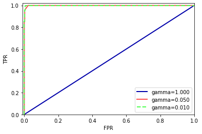
Metrics for Multiclass Classification
from sklearn.metrics import accuracy_score
X_train, X_test, y_train, y_test = train_test_split(
digits.data, digits.target, random_state=0)
lr = LogisticRegression().fit(X_train, y_train)
pred = lr.predict(X_test)
print("Accuracy: {:.3f}".format(accuracy_score(y_test, pred)))
print("Confusion matrix:\n{}".format(confusion_matrix(y_test, pred)))Accuracy: 0.951
Confusion matrix:
[[37 0 0 0 0 0 0 0 0 0]
[ 0 40 0 0 0 0 0 0 2 1]
[ 0 1 40 3 0 0 0 0 0 0]
[ 0 0 0 43 0 0 0 0 1 1]
[ 0 0 0 0 37 0 0 1 0 0]
[ 0 0 0 0 0 46 0 0 0 2]
[ 0 1 0 0 0 0 51 0 0 0]
[ 0 0 0 1 1 0 0 46 0 0]
[ 0 3 1 0 0 0 0 0 43 1]
[ 0 0 0 0 0 1 0 0 1 45]]scores_image = mglearn.tools.heatmap(
confusion_matrix(y_test, pred), xlabel='Predicted label',
ylabel='True label', xticklabels=digits.target_names,
yticklabels=digits.target_names, cmap=plt.cm.gray_r, fmt="%d")
plt.title("Confusion matrix")
plt.gca().invert_yaxis()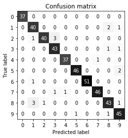
print(classification_report(y_test, pred)) precision recall f1-score support
0 1.00 1.00 1.00 37
1 0.89 0.93 0.91 43
2 0.98 0.91 0.94 44
3 0.91 0.96 0.93 45
4 0.97 0.97 0.97 38
5 0.98 0.96 0.97 48
6 1.00 0.98 0.99 52
7 0.98 0.96 0.97 48
8 0.91 0.90 0.91 48
9 0.90 0.96 0.93 47
accuracy 0.95 450
macro avg 0.95 0.95 0.95 450
weighted avg 0.95 0.95 0.95 450
print("Micro average f1 score: {:.3f}".format(
f1_score(y_test, pred, average="micro")))
print("Macro average f1 score: {:.3f}".format(
f1_score(y_test, pred, average="macro")))Micro average f1 score: 0.951
Macro average f1 score: 0.952Regression metrics
Using evaluation metrics in model selection
# default scoring for classification is accuracy
print("Default scoring: {}".format(
cross_val_score(SVC(), digits.data, digits.target == 9, cv=5)))
# providing scoring="accuracy" doesn't change the results
explicit_accuracy = cross_val_score(SVC(), digits.data, digits.target == 9,
scoring="accuracy", cv=5)
print("Explicit accuracy scoring: {}".format(explicit_accuracy))
roc_auc = cross_val_score(SVC(), digits.data, digits.target == 9,
scoring="roc_auc", cv=5)
print("AUC scoring: {}".format(roc_auc))Default scoring: [0.975 0.992 1. 0.994 0.981]
Explicit accuracy scoring: [0.975 0.992 1. 0.994 0.981]
AUC scoring: [0.997 0.999 1. 1. 0.984]res = cross_validate(SVC(), digits.data, digits.target == 9,
scoring=["accuracy", "roc_auc", "recall_macro"],
return_train_score=True, cv=5)
display(pd.DataFrame(res))| fit_time | score_time | test_accuracy | train_accuracy | test_roc_auc | train_roc_auc | test_recall_macro | train_recall_macro | |
|---|---|---|---|---|---|---|---|---|
| 0 | 0.02 | 8.98e-03 | 0.97 | 0.99 | 1.00 | 1.0 | 0.89 | 0.97 |
| 1 | 0.02 | 7.98e-03 | 0.99 | 1.00 | 1.00 | 1.0 | 0.96 | 0.98 |
| 2 | 0.02 | 7.98e-03 | 1.00 | 1.00 | 1.00 | 1.0 | 1.00 | 0.98 |
| 3 | 0.02 | 8.98e-03 | 0.99 | 1.00 | 1.00 | 1.0 | 0.97 | 0.98 |
| 4 | 0.02 | 7.98e-03 | 0.98 | 1.00 | 0.98 | 1.0 | 0.90 | 0.99 |
X_train, X_test, y_train, y_test = train_test_split(
digits.data, digits.target == 9, random_state=0)
# we provide a somewhat bad grid to illustrate the point:
param_grid = {'gamma': [0.0001, 0.01, 0.1, 1, 10]}
# using the default scoring of accuracy:
grid = GridSearchCV(SVC(), param_grid=param_grid)
grid.fit(X_train, y_train)
print("Grid-Search with accuracy")
print("Best parameters:", grid.best_params_)
print("Best cross-validation score (accuracy)): {:.3f}".format(grid.best_score_))
print("Test set AUC: {:.3f}".format(
roc_auc_score(y_test, grid.decision_function(X_test))))
print("Test set accuracy: {:.3f}".format(grid.score(X_test, y_test)))Grid-Search with accuracy
Best parameters: {'gamma': 0.0001}
Best cross-validation score (accuracy)): 0.976
Test set AUC: 0.992
Test set accuracy: 0.973# using AUC scoring instead:
grid = GridSearchCV(SVC(), param_grid=param_grid, scoring="roc_auc")
grid.fit(X_train, y_train)
print("\nGrid-Search with AUC")
print("Best parameters:", grid.best_params_)
print("Best cross-validation score (AUC): {:.3f}".format(grid.best_score_))
print("Test set AUC: {:.3f}".format(
roc_auc_score(y_test, grid.decision_function(X_test))))
print("Test set accuracy: {:.3f}".format(grid.score(X_test, y_test)))
Grid-Search with AUC
Best parameters: {'gamma': 0.01}
Best cross-validation score (AUC): 0.998
Test set AUC: 1.000
Test set accuracy: 1.000from sklearn.metrics import SCORERS
print("Available scorers:")
print(sorted(SCORERS.keys()))Available scorers:
['accuracy', 'adjusted_mutual_info_score', 'adjusted_rand_score', 'average_precision', 'balanced_accuracy', 'completeness_score', 'explained_variance', 'f1', 'f1_macro', 'f1_micro', 'f1_samples', 'f1_weighted', 'fowlkes_mallows_score', 'homogeneity_score', 'jaccard', 'jaccard_macro', 'jaccard_micro', 'jaccard_samples', 'jaccard_weighted', 'max_error', 'mutual_info_score', 'neg_brier_score', 'neg_log_loss', 'neg_mean_absolute_error', 'neg_mean_gamma_deviance', 'neg_mean_poisson_deviance', 'neg_mean_squared_error', 'neg_mean_squared_log_error', 'neg_median_absolute_error', 'neg_root_mean_squared_error', 'normalized_mutual_info_score', 'precision', 'precision_macro', 'precision_micro', 'precision_samples', 'precision_weighted', 'r2', 'recall', 'recall_macro', 'recall_micro', 'recall_samples', 'recall_weighted', 'roc_auc', 'roc_auc_ovo', 'roc_auc_ovo_weighted', 'roc_auc_ovr', 'roc_auc_ovr_weighted', 'v_measure_score']